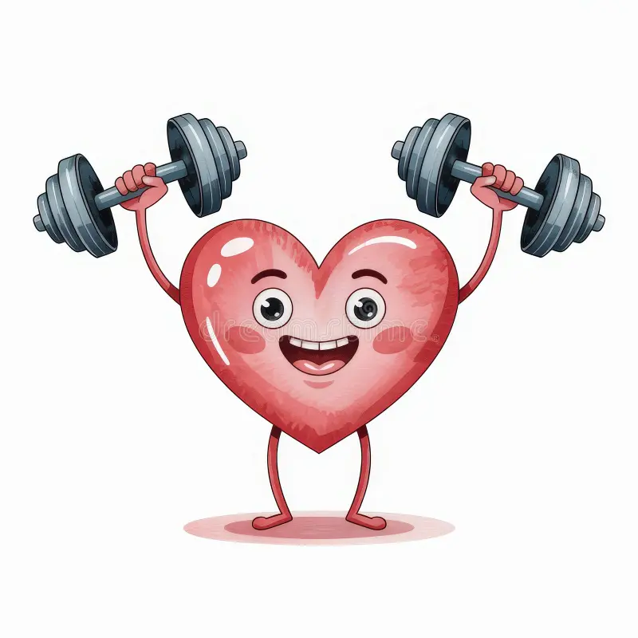

Health Benefits of Weightlifting

Weightlifting isn't just about building your muscles, it's about building a better, healthier lifestyle. From bone strength to brain power, resistance training impacts nearly every aspect of health.
Physical Benefits
- Increased Muscle Mass: Improves metabolism and strength.
- Stronger Bones: Helps prevent osteoporosis and increases bone density.
- Joint Health: Supports ligaments and reduces injury risk.
- Weight Control: Muscle burns more calories at rest than fat.
- Improved Posture: Strengthens back and core muscles.
Mental & Emotional Benefits
- Boosts Confidence: Achieving goals enhances self-esteem.
- Reduces Anxiety: Lifting releases endorphins that ease stress.
- Improved Focus: Structured training supports mental clarity and discipline.
Long-Term Health Impact
Studies show that regular weight training reduces the risk of chronic diseases such as type 2 diabetes, heart disease, and even cognitive decline. Strength training also supports longevity and independence as we age.
Bottom line: Weightlifting is one of the most effective, empowering, and beneficial practices you can adopt for your health.